Onayda açık kalacak kararlar
- Part 14: Gotik paye ve gerekirse pilaster.
- Kubbe: Ø27,6 m, yükselme 6,9 m, açık oculus Ø4,6 m önerisi; odanın tamamını kaplama kararı BRAV-154 ile birlikte.
- Merdiven: pafta 6,5 m basamak koşusu veriyor; mevcut üretici 5 m koşu + 1,5 m sahanlık kullanıyor. Görsel paftanın hedefini izler; mevcut geometriyle aynı olduğu iddia edilmez.
- 1254 px çözünürlük istisnası ve yeniden çizilen tasarımların onayı.
Görseller tasarım hedefini gösterir. Kesin ölçü, birleşim ve açıklık denetimi model aşamasında yapılır; bu teslimde model üretimi veya Unity importu yoktur.
01 · RibVaultBay
4,6 × 4,6 m; tonoz yükselmesi 2,6 m; köşe oturması 0,9 m.
 Önceki tasarım
Önceki tasarım
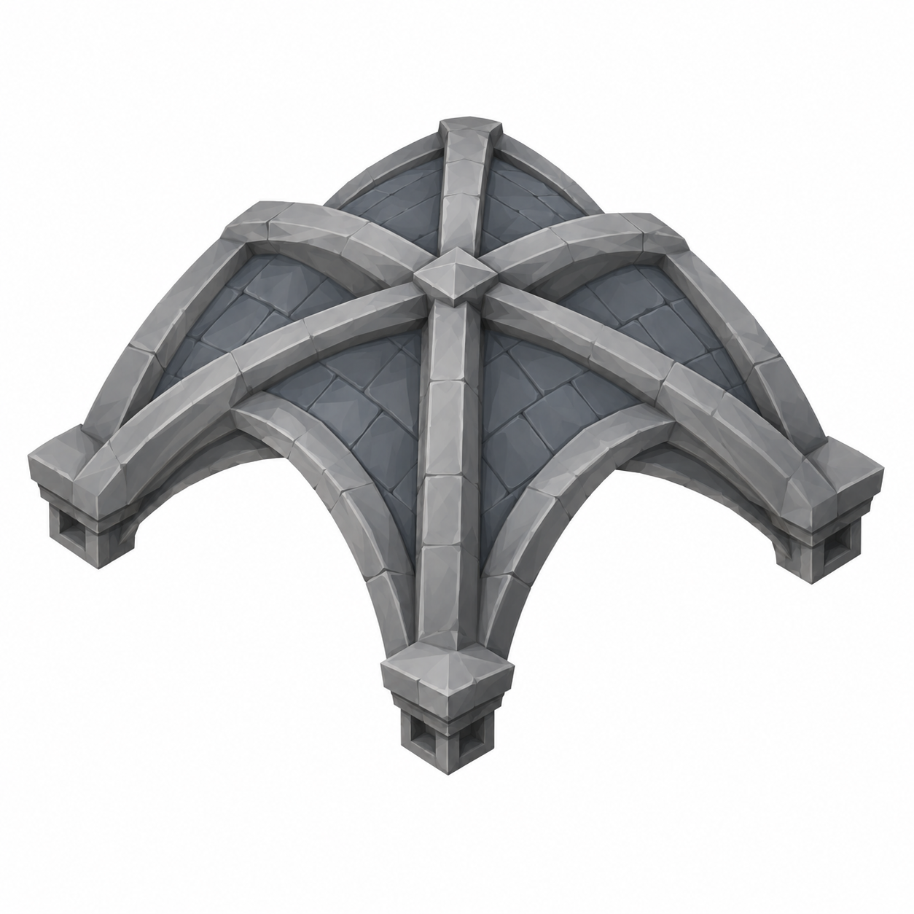
Revizyon v002 · 1254×1254 · onay bekliyor
Nervürlü tonoz kabuğu korundu; destekler kısa oturma parçaları olarak kaldı. Sıcak metal görünümü gri taşla değiştirildi.
02 · TimberTrussBay
Açıklık 13,8 m; bay derinliği 4,6 m; yükselme 4,5 m.
 Önceki tasarım
Önceki tasarım
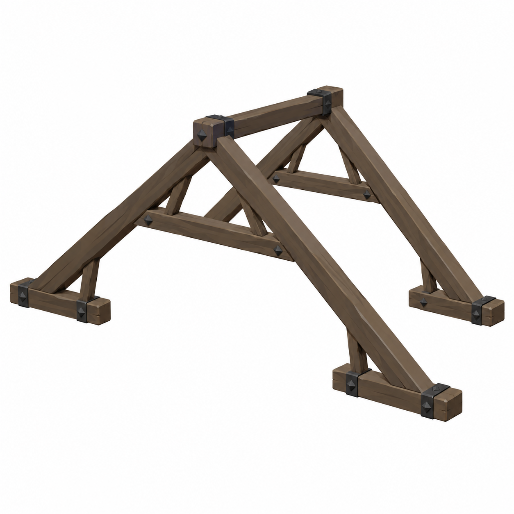
Revizyon v002 · 1254×1254 · onay bekliyor
Arka dolgu ve çatı kaplaması kaldırıldı. Makas açık; geçişin altını kesen bağ kirişi kaldırıldı.
03 · BarrelVaultBay
4,6 × 4,6 m; yarım daire yükselmesi 2,3 m.
 Önceki tasarım
Önceki tasarım
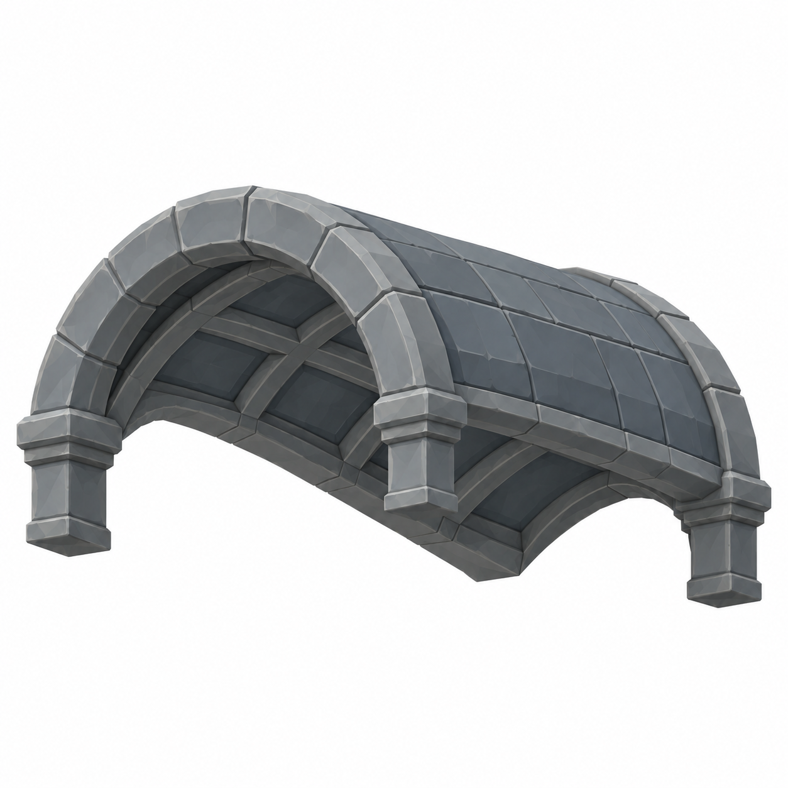
Revizyon v002 · 1254×1254 · onay bekliyor
Beşik tonozun açık alt yüzeyi ve tekrarlanan kabuk yapısı korundu. Taş rengi nötrleştirildi.
04 · CofferedPanel
4,6 × 4,6 m; kalınlık 0,45 m; 2 × 2 kaset.
 Önceki tasarım
Önceki tasarım
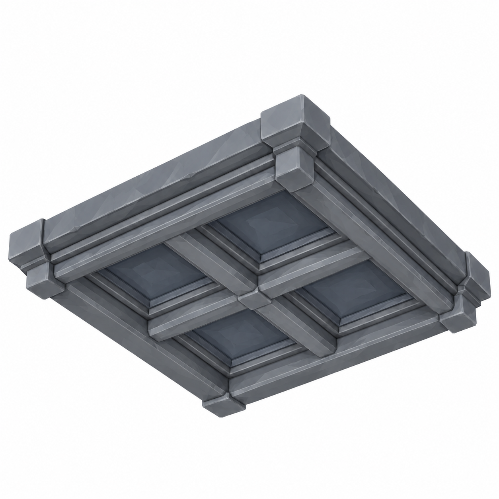
Revizyon v002 · 1254×1254 · onay bekliyor
Dört kaset korundu. Kahverengi/pirinç gibi okunan bütün şeritler gri taş oldu.
05 · CofferedDome
Kubbe Ø27,6 m; yükselme 6,9 m; kabuk 1 m; açık oculus Ø4,6 m.
 Önceki tasarım
Önceki tasarım
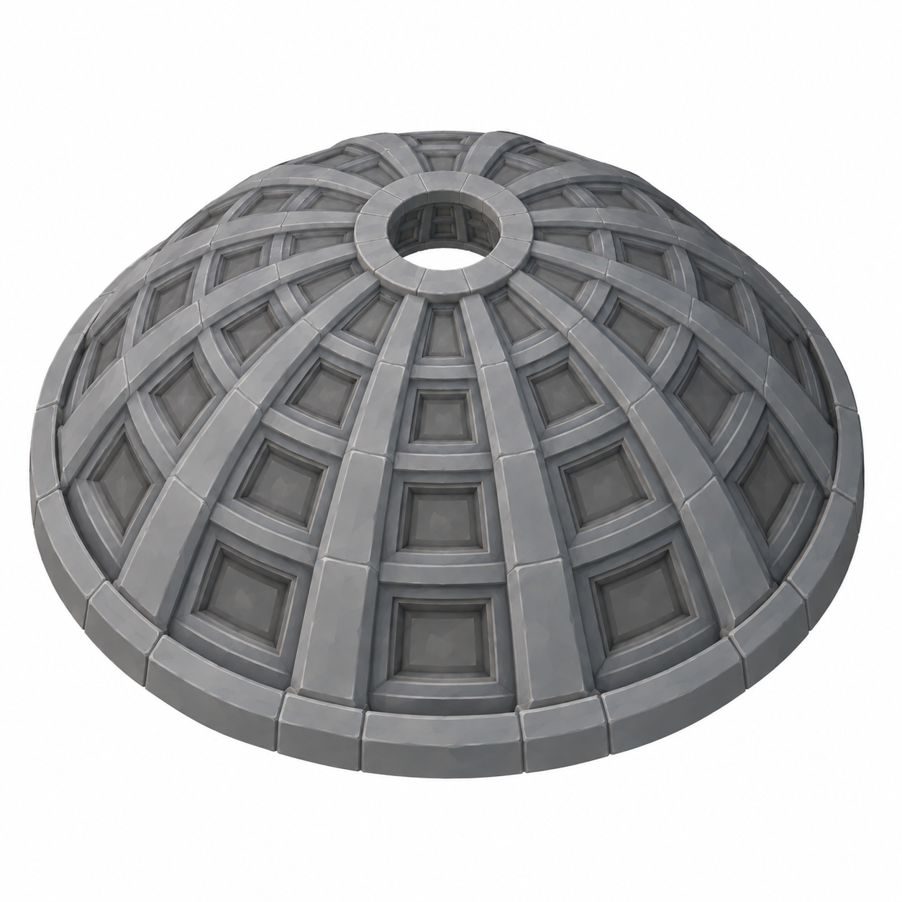
Revizyon v002 · 1254×1254 · onay bekliyor
Kamera yukarıdan 45° görünüme geçti. Gerçek açık oculus ve simetrik kasetler korundu; sıcak metal şeritler kaldırıldı. Kapsama kararı açık.
06 · PointedDoorArch
Dış 6,2 × 5,3 × 1 m; boş açıklık 4,6 × 4,5 m.
 Önceki tasarım
Önceki tasarım
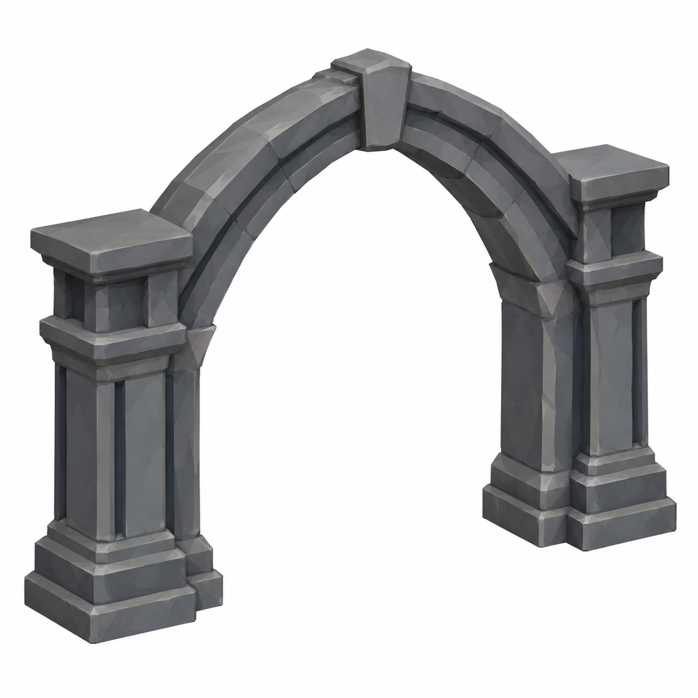
Revizyon v002 · 1254×1254 · onay bekliyor
Uzun ve dar kapı kemeri, paftadaki geniş ve alçak oranla yeniden çizildi. Kapı kanadı yok.
07 · PointedArcadeBay
Aks 4,6 m; açık geçiş 3,9 m; derinlik 1 m; üzengi 3,7 m; taç 5,8 m.
 Önceki tasarım
Önceki tasarım
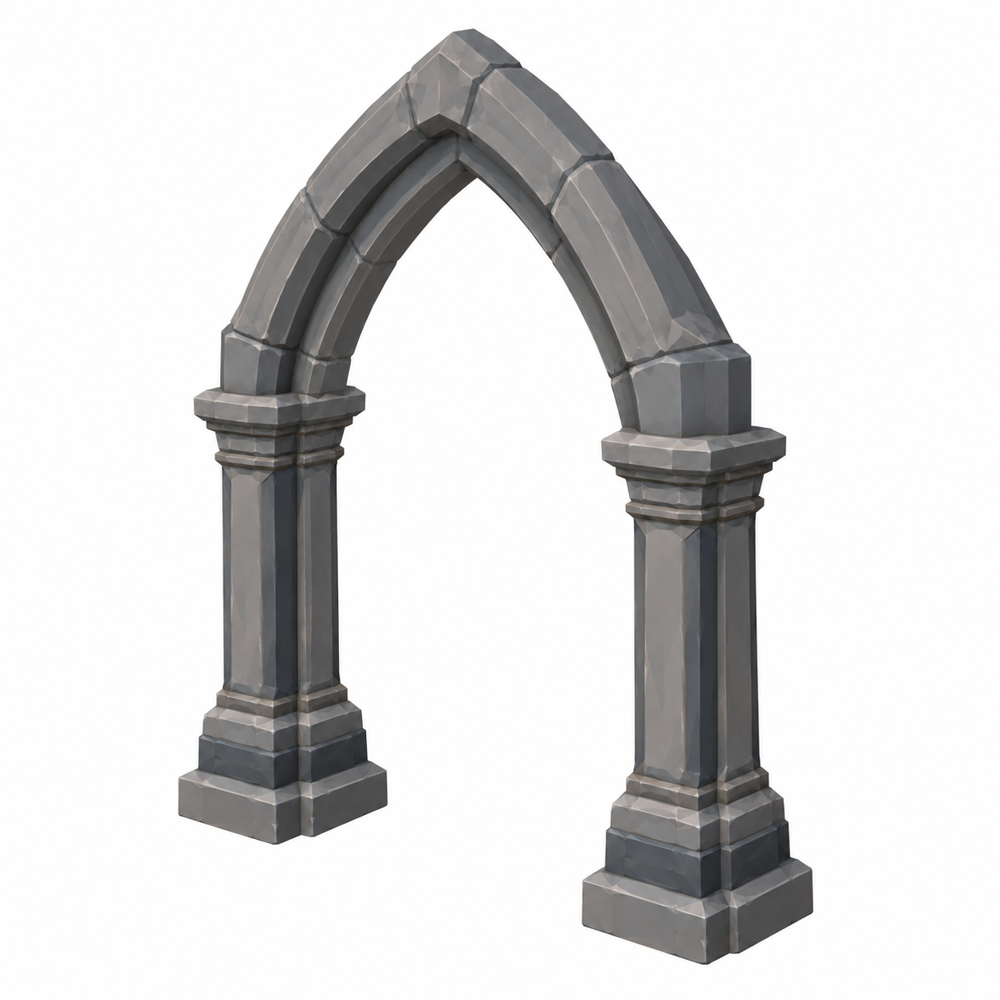
Revizyon v002 · 1254×1254 · onay bekliyor
Tek revak gözü, başlık ve tabanı ayrı okunabilen iki paye arasında çizildi. 06 kapı kemerinden farklı oran ve birleşim.
08 · RoundArcadeArch
Aks 4,6 m; açıklık 3,9 m; derinlik 1 m; üzengi 3,7 m; taç 5,65 m.
 Önceki tasarım
Önceki tasarım
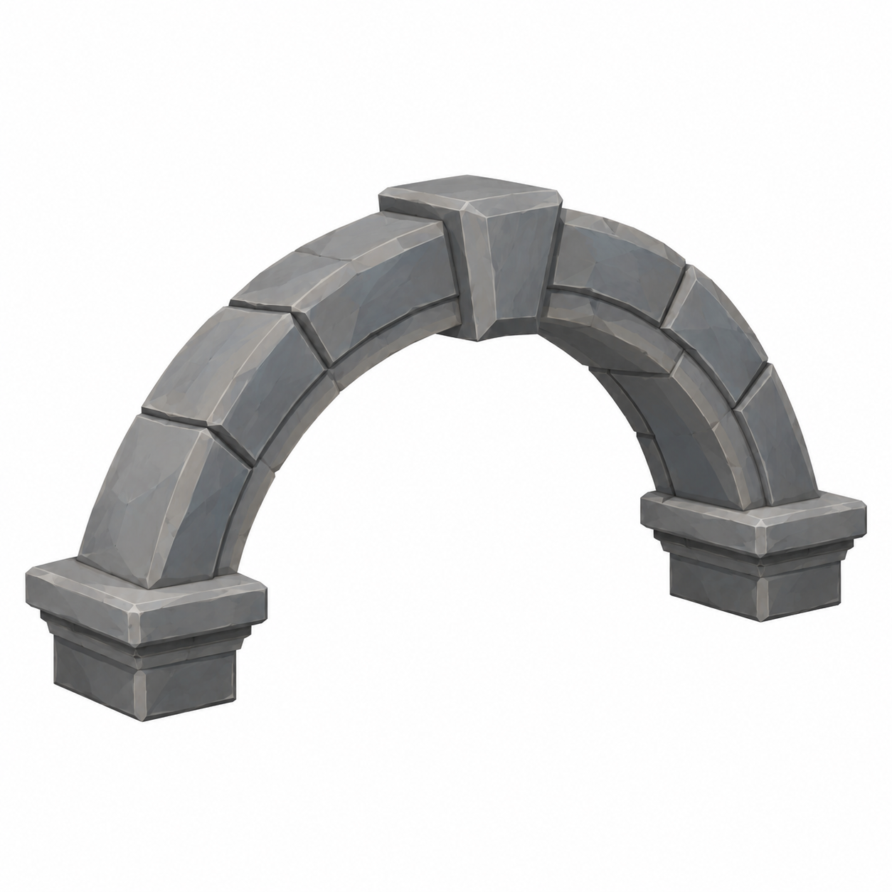
Revizyon v002 · 1254×1254 · onay bekliyor
Yuvarlak kemer kabuğu korundu; kolon part 09 olarak ayrı. Pirinç gibi görünen şeritler gri taş oldu.
09 · RenaissanceColumn
Toplam 3,7 m = taban 0,45 + gövde 2,75 + başlık 0,5 m; çaplar 0,7 / 1,1 / 1 m.
 Önceki tasarım
Önceki tasarım
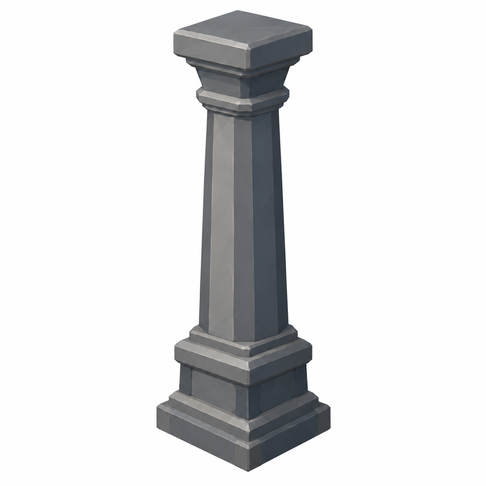
Revizyon v002 · 1254×1254 · onay bekliyor
Kolon gövdesi paftaya göre kalınlaştırıldı. Sade çokgen gövde, taban ve başlık korundu.
10 · LancetWindow
Dış 2,3 × 5 × 1 m; cam 1,15 × 4 m; montajda denizlik 1,5 m.
 Önceki tasarım
Önceki tasarım
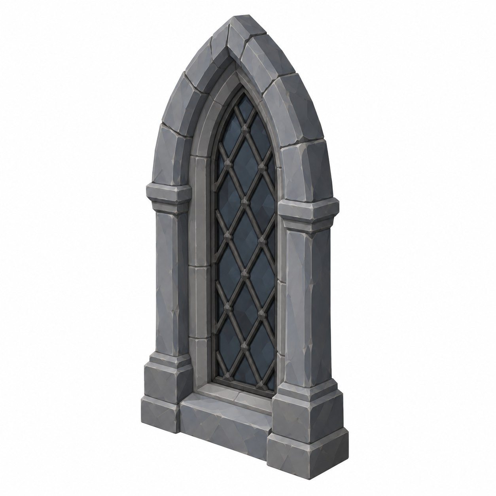
Revizyon v002 · 1254×1254 · onay bekliyor
Lanset pencere oranı ve koyu, nötr, yanmayan kurşunlu cam korundu. Taş rengi nötrleştirildi.
11 · BalustradeRun
Uzunluk 2,3 m; derinlik 0,4 m; yükseklik 1,2 m; dört baluster.
 Önceki tasarım
Önceki tasarım
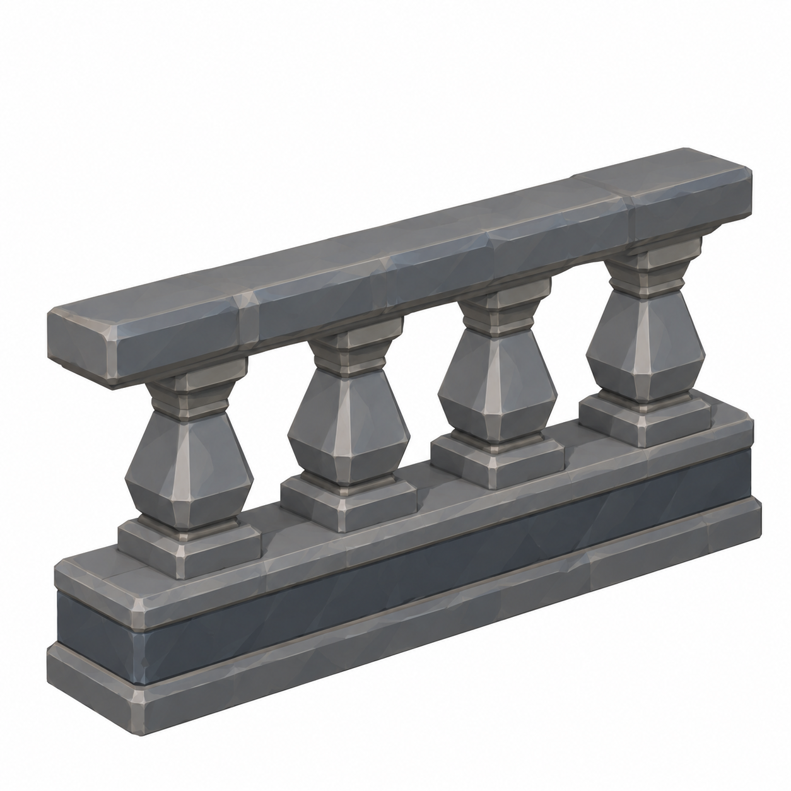
Revizyon v002 · 1254×1254 · onay bekliyor
İki gömülü uç direği kaldırıldı. Dört eş baluster, düz taş başlık ve düz taban kaldı; uçlar tekrar için açık.
12 · BalustradeEndPost
0,5 × 0,5 × 1,4 m.
 Önceki tasarım
Önceki tasarım
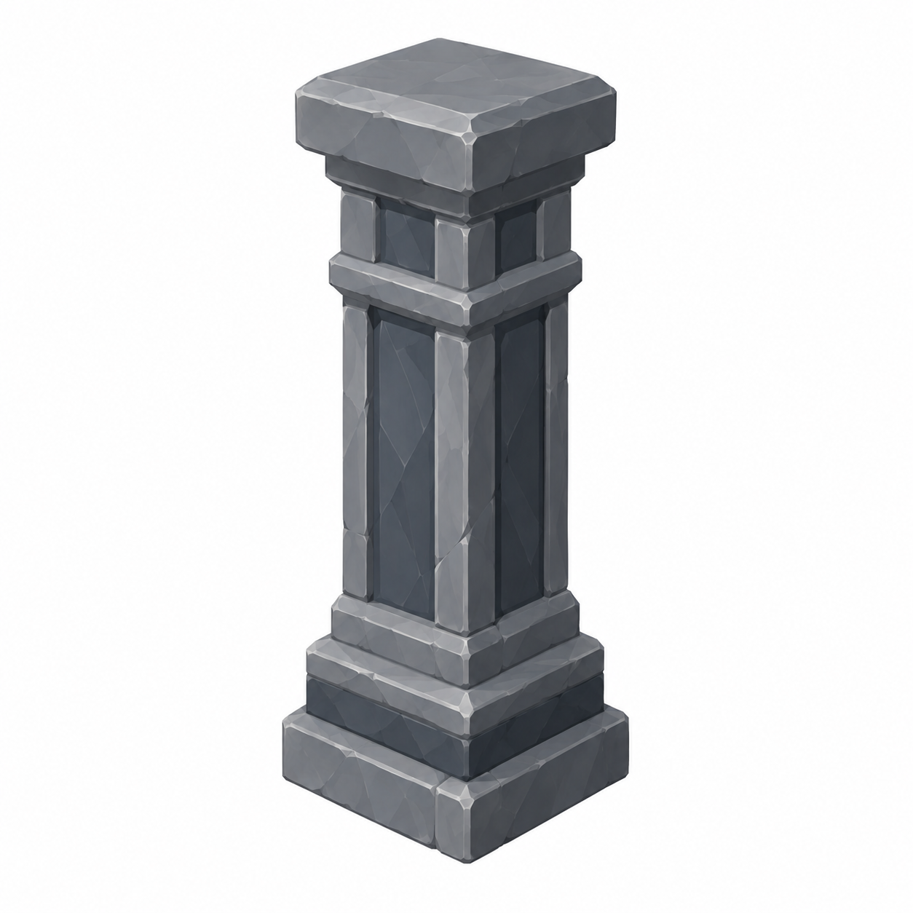
Revizyon v002 · 1254×1254 · onay bekliyor
Tek ayrı uç direği korundu. Balustrade ve merdivene gömülü değil; sıcak şeritler gri taş oldu.
13 · GreatStair
Genişlik 5,8 m; koşu 6,5 m; yükselme 2,473 m; sekiz eş basamak.
 Önceki tasarım
Önceki tasarım
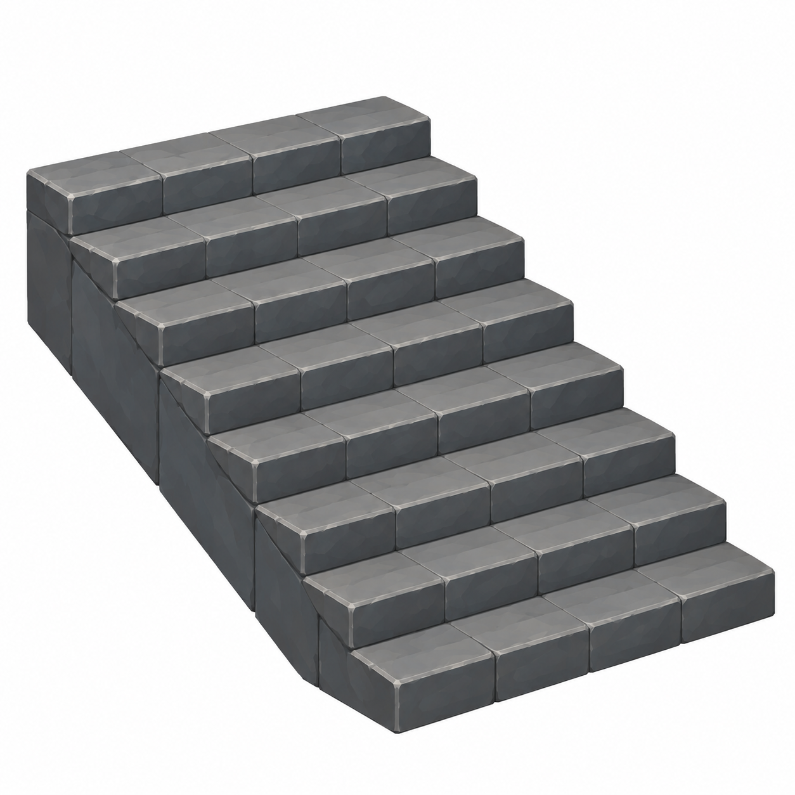
Revizyon v002 · 1254×1254 · onay bekliyor
Direkler, yan korkuluklar ve eğimli trabzanlar kaldırıldı. Yalnızca sekiz basamaklı tek geniş kol var. Mevcut üreticiyle koşu/sahanlık farkı onay notunda.